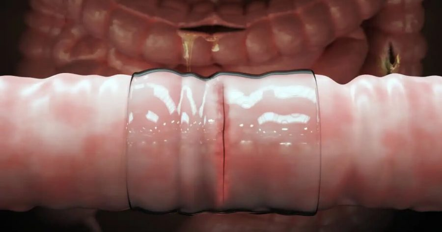

စာရွက်တွေ ကပ်တဲ့ ဆယ်လိုတိတ် အကြည်လိုမျိုး အူတွေကို ကပ်နိုင်တဲ့ ပလတ်စတာ တစ်မျိုးကို MIT တက္ကသိုလ်က သုတေသီ တွေက အောင်မြင်စွာ တီထွင်လိုက်ပါတယ်။ ဒီ ပလတ်စတာ နဲ့ ကြွက်တွေရဲ့ အူပေါက် တွေကို ကပ်ပြီး စမ်းသပ်ရာမှာ ရောဂါပိုး ဝင်ရောက်ခြင်း မရှိပဲ ကောင်းစွာ အနာကျက်တယ်လို့ ဒီ သုတေသီ တွေက တင်ပြတဲ့ သုတေသန ဆောင်းပါးမှာ ဖော်ပြထားပါတယ်။
လူ့ကိုယ်ခန္ဓာ အတွင်းက အူတွေကို ခွဲစိတ် ကုသမှုပြုပြီး ချုပ်ထားတဲ့ ချုပ်ရိုး မလုံခဲ့လို့ ရှိရင် အူထဲက ဘက်တီးရီးယား တွေဟာ ဒီ ချုပ်ရိုးကနေ စိမ့်ထွက်ပြီး ဝမ်းခေါင်းတွင်းမှာ ပြင်းထန်တဲ့ ပိုးဝင်ရောင်ရမ်းခြင်း ဖြစ်လာနိုင်ပါတယ်။ ဒီကနေမှ သွေးထဲကို ရောဂါပိုးတွေ ပျံ့နှံ့သွား ခဲ့ရင် အသက် ဆုံးရှုံးတဲ့ အထိ ဖြစ်လာနိုင်ပါတယ်။
အမေရိကန် ပြည်ထောင်စု မက်ဆာချူးဆက် စက်မှု တက္ကသိုလ် (Massachusetts Institute of Technology, MIT) က သုတေသီ တွေဟာ အရောင်အဆင်း ကြည်လင်ပြီး ကိုယ်တွင်းမှာ အရည်ပျော် သွားမယ့် ပလတ်စတာ တစ်မျိုးကို တီထွင်အောင်မြင် ခဲ့ကြပါတယ်။
ဒီ ပလတ်စတာ နဲ့ ကြွက် နဲ့ ဝက်တွေရဲ့ အူနံရံက ခွဲကြောင်းတွေကို ပိတ်ပြီး စမ်းကြည့်တဲ့ အခါ အနာကောင်းစွာ ကျက်ကြတာကို တွေ့ရှိခဲ့ ကြပါတယ်။
လူ့ကိုယ်ခန္ဓာက အနာတွေနဲ့ ပြတ်ရှဒါဏ်ရာတွေ၊ ခွဲစိတ်ဒါဏ်ရာ တွေကို ပလတ်စတာနဲ့ ကပ်ပြီး ပိတ်တာ အထူးအဆန်းတော့ မဟုတ်ပါဘူး။ ဒါပေမယ့် အရေပြား ပေါ်က ခြောက်သွေ့ နေတာမို့ ကပ်ရ လွယ်ပေမယ့် ကိုယ်တွင်းက အူနံရံ ကတော့ စိုနေတဲ့ အပြင် ချွဲကျိချွဲကျိ နဲ့မို့ ကပ်ဖို့ မလွယ်ကူ ပါဘူး။ ဒီတော့ ကိုယ်တွင်း အူနံရံတွေကို ကပ်မယ့် ပလတ်စတာ အမျိုးအစား ကို သီးသန့် တီထွင် ရပါတယ်။
MIT သိပ္ပံ ပညာရှင် တွေဟာ အူတွင်းကပ်မယ့် ပလတ်စတာ အမျိုးအစားကို အောင်မြင်စွာ တီထွင် နိုင်ခဲ့ ပါတယ်။ ဒီ ပလတ်စတာဟာ အူနံရံမှာ ကပ်လိုက်လို့ ရှိရင် ကပ်တဲ့ဖက်က hydrogel အဖြစ် ပြောင်းသွားပြီး အူနံရံကို သွားပြီး ကော်အနေနဲ့ တွယ်ကပ် သွားပါတယ်။
ဒီ ပလတ်စတာ ကိုလဲ ပျော့ပြောင်းအောင် တီထွင် ဖန်တီး ထားတာမို့ အူရဲ့ အတွန့်အခေါက်တွေ ကြားထဲ အလွယ်တကူ ပုံစံတကျ ကပ်ပေးနိုင်မှာ ဖြစ်တယ်လို့ ဆိုပါတယ်။
ဒီ ပလတ်စတာဟာ အူနံရံ တွေမှာ ကပ်ရုံတင် မကဘူး အူနံရံက အနာပေါ် ကျရောက်တဲ့ ဖိအားကို လဲ ပြန့်သွားအောင် လုပ်ပေးနိုင် တယ်လို့ ဆိုပါတယ်။
ဒီအချက်က အရေးကြီးပါတယ်။ ဘာလို့ဆို အချို့ အနာတွေက ခွဲစိတ်ပြီး ကောင်းကောင်း မကျက်သေးခင်မှာ အားနည်းနေ တတ်ပါတယ်။ ဒီအချိန်မှာ ဒီအနာကို ဖိမိရင် ပြဲထွက် သွားနိုင်လို့ပါ။
ဒါပေမယ့် အခု ပလတ်စတာ နဲ့ ကပ်ထားရင်တော့ ဒီလို ဖိအားတွေ ကျရောက် လာမယ်ဆို အနာပေါ် တိုက်ရိုက် သက်ရောက်မှု မရှိပဲ အနာနား ပါတ်ဝန်းကျင်က ပြန့်နှံံ သွားမှာ ဖြစ်ပါတယ်။
အခုလို Hydrogel ကို အနာကပ်တဲ့ ပလတ်စတာ တွေမှာ သုံးတာဟာ ဒါပထမ ဆုံး မဟုတ်ပါဘူး။ ဒါပေမယ့် ဒီ ဟိုက်ဒြိုဂျဲလ်အလွှာကို အပေါ်က ခြောက်သွေ့တဲ့ အလွှာ တစ်ထပ်ခံပြီး သုံးတာ၊ နောက်ပြီး ပျော့ပြောင်းတဲ့ ပလတ်စတာ အနေနဲ့ အသုံးပြုတာ တွေဟာ အသစ်အဆန်း ဖြစ်နေတယ်လို့ လန်ဒန် အင်ပီရီယယ် ကောလိပ်က သုတေသီ Nuria Oliva-jorge က ရှင်းပြပါတယ်။
“အခုထက်ထိ ကိုယ်တွင်းက အူတွေချုပ်ဖို့ဆို ကြိုးတွေနဲ့ စတယ်ပလာ ချုပ်စက် တွေကိုပဲ သုံးနေခဲ့ကြ ရတာပါ။ ဘာ့ကြောင့်ဆို စိုဆွတ်တဲ့ အူနံရံမှာ ကပ်နိုင်မယ့် ပလတ်စတာ မရှိသေးလို့ပါ။ အခုတော့ ဒီ တိပ် တီထွင်နိုင်ပြီပေါ့ဗျာ” လို့ သူက ဆက်ပြောပါတယ်။
ယခုလို တိရိစ္ဆာန် တွေမှာ စမ်းသပ်မှု အောင်မြင် သွားတဲ့အတွက် သုတေသီ တွေဟာ နောက်တဆင့် အနေနဲ့ လူမှာ စမ်းသ်ပဖို့ ခွင့်ပြုချက် ရဖို့ ကြိုးစား နေကြတယ်လို့ သိရပါတယ်။ ဒီ ပလတ်စတာကို ဈေးကွက်တင် ရောင်းချ နိုင်ဖို့လဲ ကုမ္ပဏီ တစ်ခု ထူထောင်ထားတယ်လို့ သိရပါတယ်။
Reference: Medical dressing works like duct tape to seal internal wounds | New Scientist
အူတွေကို မချုပ်ပဲ ကပ်နိင်မယ့် ပလတ်စတာ တီထွင်အောင်မြင်

February 14, 2022
Other Posts
- အလွန်ရှားပါးတဲ့ ၃ မွှာပူး ကြယ်အဖွဲ့အစည်း ရှာတွေ့
- Dark Energy ရှာတွေ့ပြီလား
- Black hole ရဲ့ ဓါတ်ပုံ
- ရှေးအကျဆုံး အီဂျစ်မံမီ ရှာတွေ့
- စကြာဝဠာ အတွင်းက အအေးဆုံး ဒေသ
- အလင်းအလျှင်ထက် မြန်အောင်သွားမယ့် Warp Drive
- ကမ္ဘာပေါ်မှာ အသက်ဇီဝ ဘယ်လို စဖြစ်လာလဲ
- မစ်ကီးဝေး ပြင်ပမှာ ဂြိုဟ်တစင်း ပထမဆုံး ရှာတွေ့
- အနာဂါတ်နည်းပညာ နယ်ပယ်တွေမှာ တိုးချဲ့ သုတေသန ပြုမယ့် ဟွန်ဒါ
- အိုင်းစတိုင်း၏ လက်ရေးစာတမ်း ဒေါ်လာ ၁၃ သန်းနှင့် ရောင်းချ